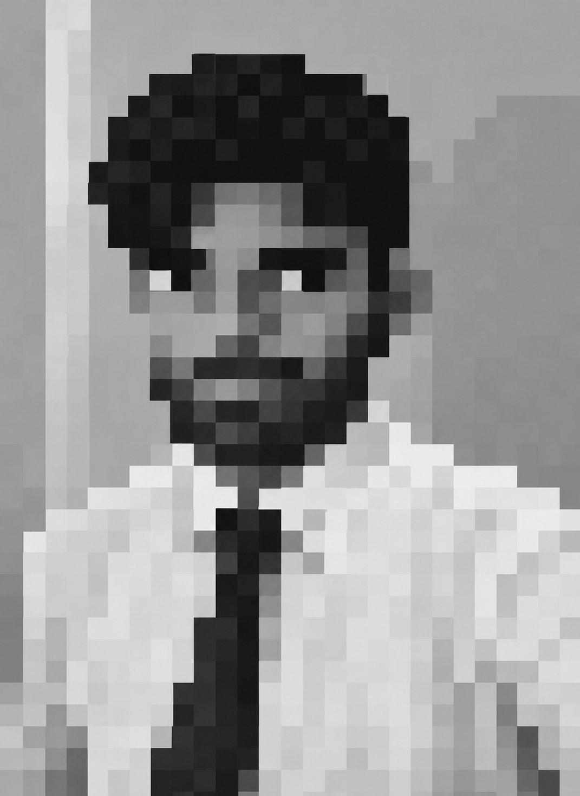

A student of Electrical and Electronics Engineering (EEE) at NIT Calicut. I am focused on building a comprehensive skill set that spans core engineering fundamentals, programming, and hardware implementation.
I advocate for a 'system as a whole' philosophy, which involves mastering all aspects of a system, from software to hardware. My goal is to gain comprehensive knowledge of both domains by building projects that bridge the gap ranging from circuit design and hardware implementation to software programming.
I bridge the gap between complex hardware logic and intelligent software systems. From designing elevator control systems using pure ICs to deploying Deep Learning models for galaxy classification and digit recognition.
TensorFlow, Keras, Kaggle API | Dataset: Galaxy-Zoo
Built a deep CNN inspired by AlexNet architecture to classify galaxy morphologies into 'Round' and 'Edge-on' categories with 90%+ validation accuracy. Implemented automated data pipeline using Kaggle API for dataset acquisition, ImageDataGenerator for preprocessing, and multi-layer convolutional feature extraction with dropout regularization.
TensorFlow, Keras, CNN | Dataset: MNIST | Accuracy: 90-99%
Developed a custom CNN for handwritten digit recognition trained on MNIST dataset with 10 epochs of optimization. Features intelligent image preprocessing (auto-inversion for white-background images), saved model persistence, and a dedicated testing pipeline for real-world digit predictions.
Digital Logic ICs, Priority Encoders, D Flip-Flops, Comparators
Designed a complete 5-floor elevator control system using only digital ICs—zero software involved. Implements two independent subsystems: (1) Elevator Logic Unit managing floor selection and state transitions, and (2) Passenger Monitoring System with occupancy tracking that triggers safety alarms on capacity overflow.
Python (Backend), JavaScript (Frontend), AI Agent Orchestration
Built a full-stack agentic AI application within 24 hours that leverages intelligent agent orchestration to solve real-world problems. Engineered robust Python backend for agent logic and state management paired with responsive JavaScript frontend for user interaction.